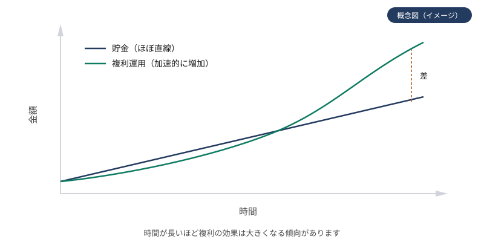
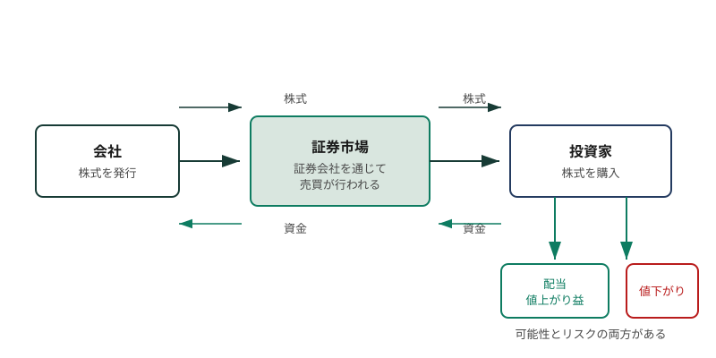

投資の基本
このページで学ぶこと
- 投資とは何か、貯金との違い
- 投資と投機の違い
- 株式とは何か、株主の権利
- 株価が決まる仕組み
- 市場（取引所・証券会社・投資家）の仕組み
投資とは
投資とは、将来の利益を期待して、資金を資産に投じる行為です。株式や債券、投資信託、不動産など、さまざまな資産に資金を投じることで、将来的な値上がり益（キャピタルゲイン）や、配当・利子などの収益（インカムゲイン）を得ることを目指します。
投資の本質は「お金に働いてもらう」ことです。銀行預金の利息だけでは資産はほとんど増えませんが、投資を通じて企業の成長や経済の発展に参加することで、長期的に資産を増やす可能性があります。ただし、投資には元本割れのリスクが伴います。
投資で得られる2つの利益
- キャピタルゲイン: 資産の値上がりによる利益（例: 株価が上がって売却する）
- インカムゲイン: 資産を保有することで得られる定期的な収益（例: 配当金、利子）
貯金との違い
貯金（預金）と投資の最大の違いは、元本保証の有無とリターンの大きさです。
| 貯金（預金） | 投資 | |
|---|---|---|
| 元本保証 | あり（預金保険制度の範囲内） | なし（元本割れのリスクあり） |
| リターン | 利息（低水準） | 値上がり益・配当・利子（変動が大きい） |
| 流動性 | 高い（いつでも引き出せる） | 商品による（売却に時間がかかる場合も） |
| インフレへの強さ | 弱い（物価上昇で実質価値が目減り） | 比較的強い（資産価格が物価とともに上がる傾向） |
貯金は「使う予定のあるお金」や「生活防衛資金」を置く場所として適しています。一方、投資は「当面使う予定のないお金」を長期的に育てる手段です。どちらか一方ではなく、目的に応じて使い分けることが大切です。
図：貯金と複利の伸び方

時間が長いほど複利の効果は大きくなる傾向があります（概念図です）
投資と投機
投資と投機は、どちらも資産の値動きから利益を得ようとする行為ですが、その考え方と時間軸が異なります。
- 投資: 企業の成長や資産の価値に着目し、長期的な視点で資金を投じる。短期的な価格変動に一喜一憂しない。
- 投機: 短期的な価格変動から利益を得ようとする行為。値動きの予測に依存するため、リスクが高い。
両者の境界は必ずしも明確ではありませんが、長期的な視点と分散を重視するのが「投資」の考え方です。当サイトでは、長期・分散を前提とした投資の知識を中心に扱います。
株式とは
株式とは、企業が事業資金を調達するために発行する証券です。株式を購入すると、その企業の「株主」となり、企業の所有者の一部となります。
株主の主な権利
- 配当を受け取る権利: 企業が利益を出したときに、その一部を配当金として受け取れる
- 株主総会での議決権: 経営方針や役員の選任などに投票できる
- 残余財産の分配請求権: 企業が解散した際に、残った財産の分配を受けられる
株主＝企業の所有者
株式を保有することは、企業の所有権の一部を持つことです。ただし、日常の経営は経営陣に任されており、株主は議決権を通じて間接的に関与します。
図：株式の仕組み

会社・証券市場・投資家の関係と、リターンの可能性およびリスクの概念図です
株価の決まり方
株価は、市場における「需要と供給」のバランスで決まります。買いたい人が多ければ株価は上がり、売りたい人が多ければ株価は下がります。
株価に影響を与える主な要因は以下のとおりです。
- 企業業績: 売上や利益が予想を上回れば株価は上がりやすく、下回れば下がりやすい
- 経済環境: 金利、為替、景気動向などが市場全体に影響する
- 市場心理: 投資家の期待や不安が需給に反映される
- 外部要因: 政治情勢、自然災害、国際情勢なども影響する
株価は将来の企業業績への「期待」を織り込んで動くため、現在の業績が良くても、将来への期待が低下すれば株価は下がることがあります。
市場の仕組み
株式の売買は、主に証券取引所を通じて行われます。日本では東京証券取引所が代表的です。
市場参加者
- 取引所: 株式の売買が行われる場所（東京証券取引所など）
- 証券会社: 投資家の注文を取引所に取り次ぐ
- 投資家: 個人投資家や機関投資家（年金基金、投資信託など）
注文の種類
| 注文方法 | 内容 | 特徴 |
|---|---|---|
| 成行注文 | 価格を指定せずに注文する方法 | すぐに約定しやすいが、思わぬ価格で約定する可能性がある |
| 指値注文 | 価格を指定して注文する方法 | 希望価格で約定するが、価格に届かなければ約定しない |
よくある誤解
投資は少額から始められます。投資信託の積立投資では月100円から始められる商品もあります。重要なのは金額の大小ではなく、長期・分散の考え方です。
短期的な値動きだけを狙う投機的な取引はギャンブルに近くなりますが、長期・分散を前提とした投資は、企業の成長や経済の発展に参加する行為です。目的と時間軸が異なります。
株価が上がっても、売らなければ利益は確定しません（評価益）。また、配当や税金、手数料も考慮する必要があります。株価の上昇がそのまま手元の利益になるわけではありません。
理解度チェック
Q1. 投資と貯金の最も大きな違いは何ですか?
Q2. 株主の主な権利として正しいものはどれですか?
Q3. 株価が決まる基本的な仕組みは何ですか?